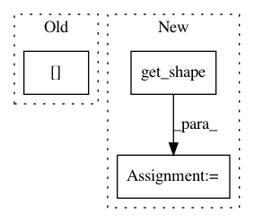

44e5d97622d6d42ac918574c6f2e96d59ccf3010,coremltools/converters/nnssa/coreml/ssa_converter.py,SSAConverter,_convert_conv2d_transpose,#SSAConverter#Any#,2596
Before Change
border_mode = node.attr.get("padding").lower()
stride_height = strides[1]
stride_width = strides[2]
input_shape = self.tensor_shapes[input_name]
output_shape = self.tensor_shapes[input_names[0]]
kernel_channels = input_shape[1]
output_channels = output_shape[-1]
After Change
stride_width = strides[2]
kernel_channels = input_types[-1].get_shape()[1]
output_channels = node.datatype.get_shape()[1]
self._get_builder().add_convolution(
name=node.name,
kernel_channels=kernel_channels,
In pattern: SUPERPATTERN
Frequency: 3
Non-data size: 3
Instances
Project Name: apple/coremltools
Commit Name: 44e5d97622d6d42ac918574c6f2e96d59ccf3010
Time: 2019-12-16
Author: gdawer@apple.com
File Name: coremltools/converters/nnssa/coreml/ssa_converter.py
Class Name: SSAConverter
Method Name: _convert_conv2d_transpose
Project Name: apple/coremltools
Commit Name: ea073317c1ba5d7be32a0074287d5cfd14062e40
Time: 2019-12-06
Author: bsonawane@apple.com
File Name: coremltools/converters/nnssa/coreml/ssa_converter.py
Class Name: SSAConverter
Method Name: _convert_zeros_like
Project Name: apple/coremltools
Commit Name: d834d40a167dab5f49bb7adae24199f25f6a2dec
Time: 2020-03-16
Author: 55294647+jakesabathia2@users.noreply.github.com
File Name: coremltools/converters/nnssa/coreml/ssa_converter.py
Class Name: SSAConverter
Method Name: _convert_pack